Interesting Facts About Bruges
Step into Europe's best-preserved medieval city — where Vikings named the streets, medieval beer was psychedelic, a password got 200 people killed in a single night, and the swans on the canal are a 500-year-old punishment.
Walk the Medieval City
Bruges is compact enough to walk everywhere, yet packed with enough history, legends, and outright weirdness to keep the whole family talking for days. Tap any card below to reveal the story.
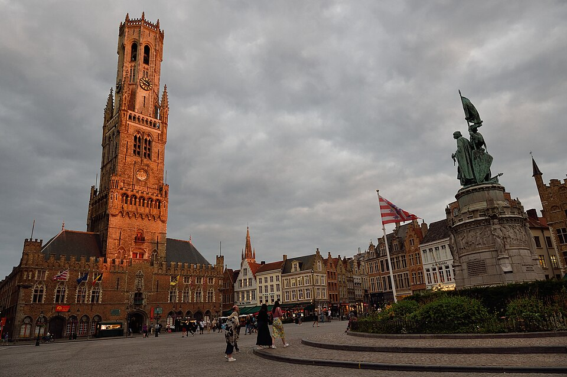
tap to expandStop 01 · The Commercial Heart
The modern heart of Bruges — ringed by gabled buildings and the massive Belfry tower. Stand here and imagine it in the 800s: swamps, forests, lakes, and Viking dragon boats sailing right to this spot. They called the place Bryggija — their word for "boat stop" — which became Brugge, then Bruges.
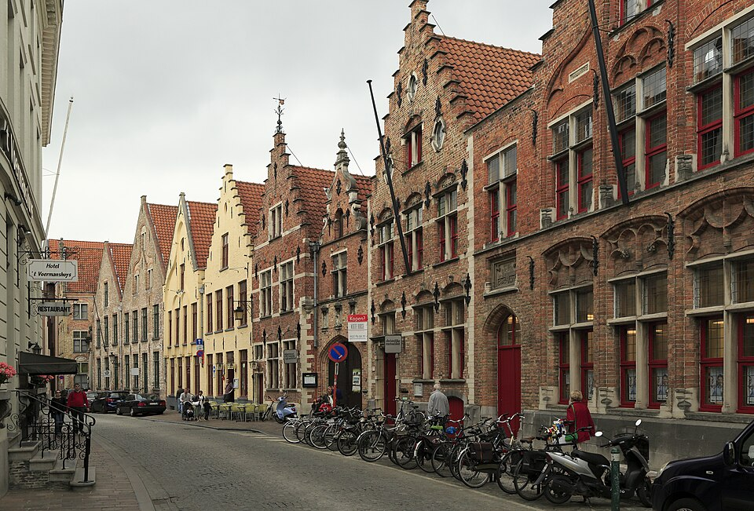
tap to expandStop 02 · Oldest Street in Bruges
You are walking on the oldest street in Bruges. The cobblestones look ordinary, but what lies underneath them is several metres of compressed medieval garbage.
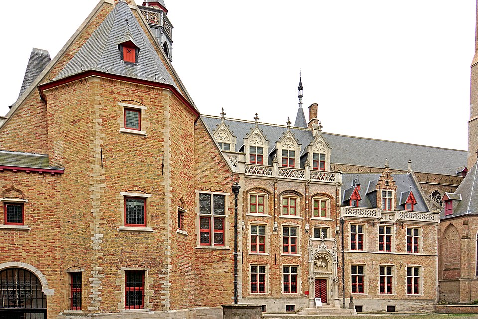
tap to expandStop 03 · The Beer Monopoly Palace
"Huse" is old Flemish for house. "Gruut" was the secret spice blend used to brew beer before hops were invented. The family who owned this palace held the monopoly on selling gruut to every brewer in the region — and became enormously wealthy as a result.
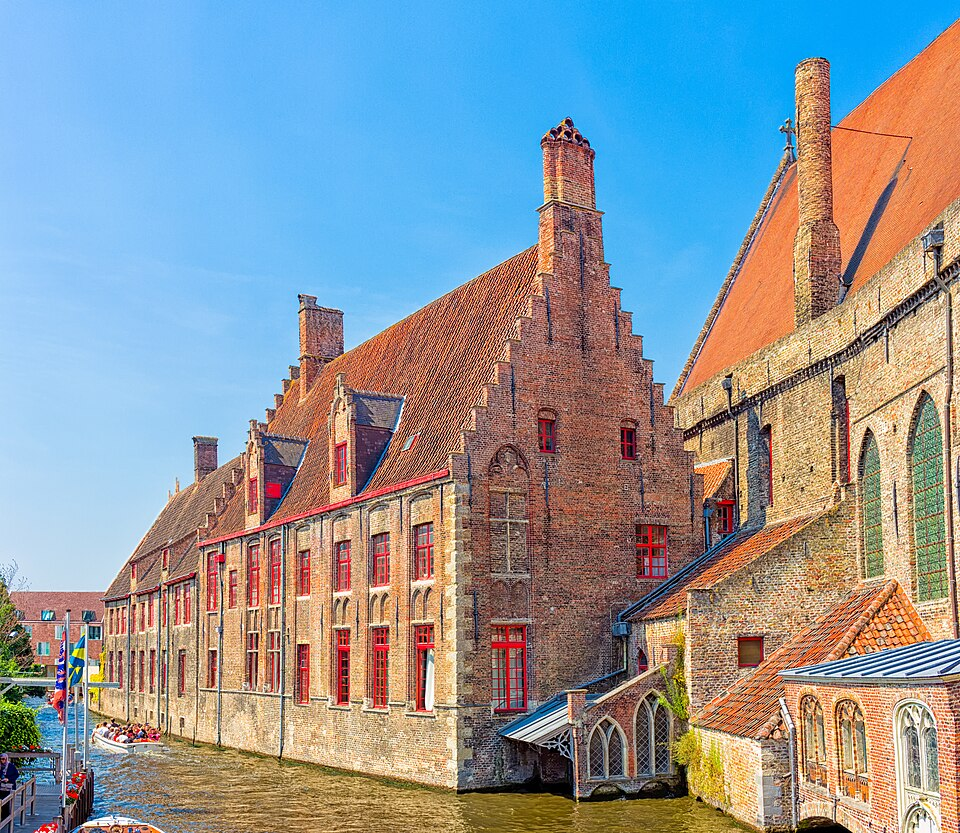
tap to expandStop 04 · 800 Years of Medicine
Built in the 1100s, this is one of the oldest hospitals in Europe. It operated continuously for over 800 years, until 1977. Today it houses a museum. The medical treatments practised here were, by modern standards, alarming.
Stop 05 · The Saint and the Dog
Born in the 1300s, Rochus gave away all his possessions and walked across Europe caring for people suffering from the Black Plague — until he caught it himself. What happened next involves a stray dog, mouldy bread, and possibly the world's first accidental penicillin cure.
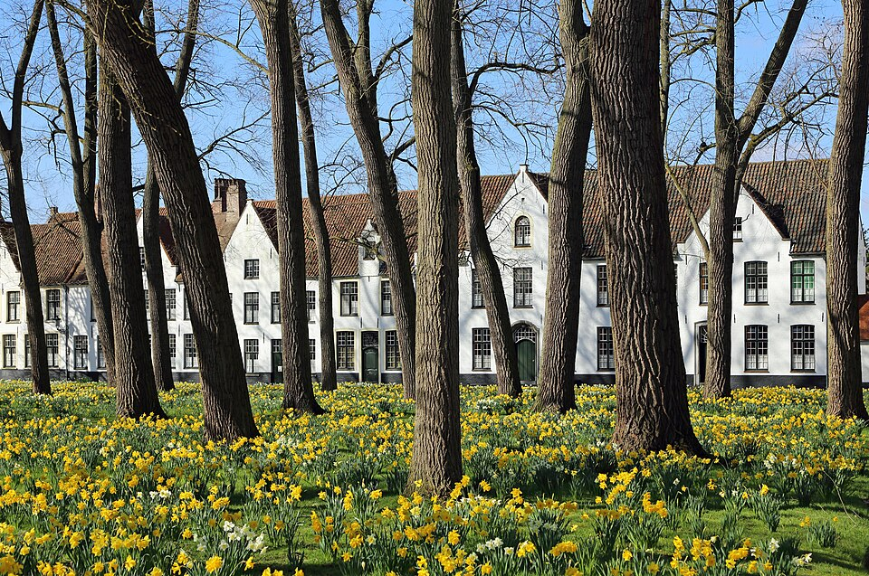
tap to expandStop 06 · The Women's City
Founded in 1245 as a safe, independent community for single women and widows — a walled mini-city inside Bruges, with its own laws, church, bakery, brewery, and farm. Benedictine nuns still live here today and gather for sung vespers at 4:30pm daily. The public is welcome to attend.
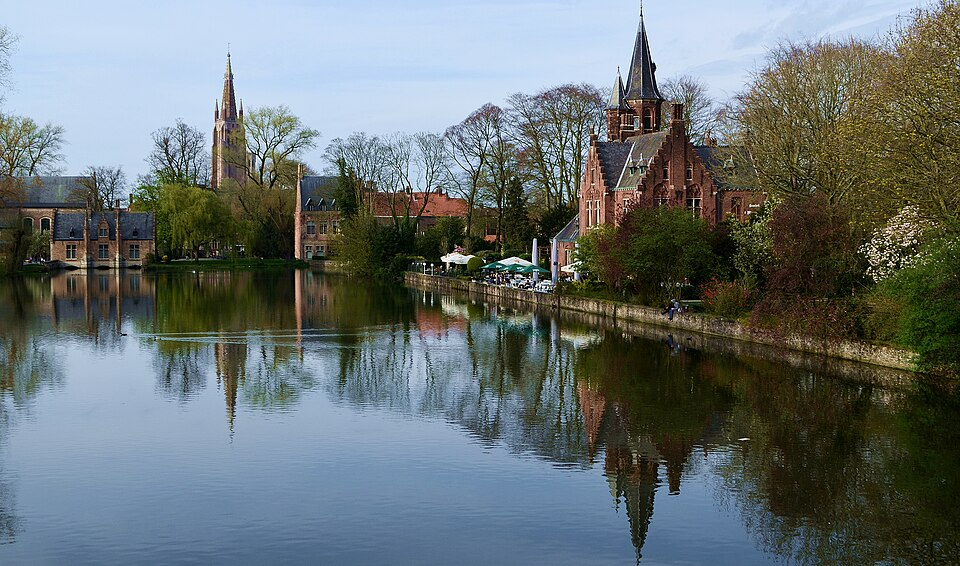
tap to expandStop 07 · Swans, Legends & a Murder
A peaceful, swan-filled park with weeping willows and canals. But Minnewater was once a busy working harbour — and the swans are not here for decoration. They are a punishment that has lasted more than 500 years.
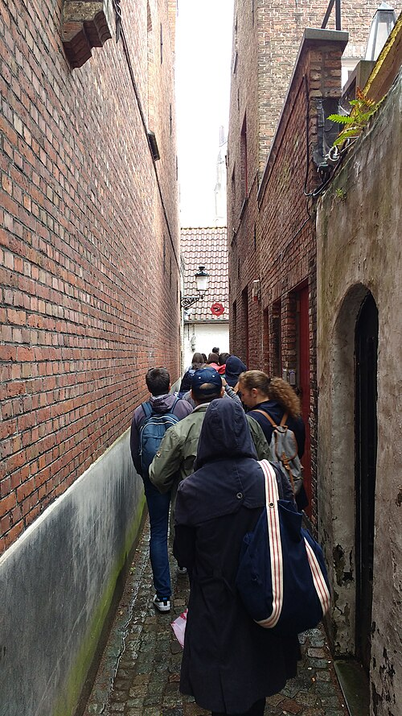
tap to expandStop 08 · World Records
Bruges is proud of its superlatives. Stoofstraat is the city's narrowest alley — barely wide enough for one person to walk through. Two people passing in opposite directions will need to turn sideways.
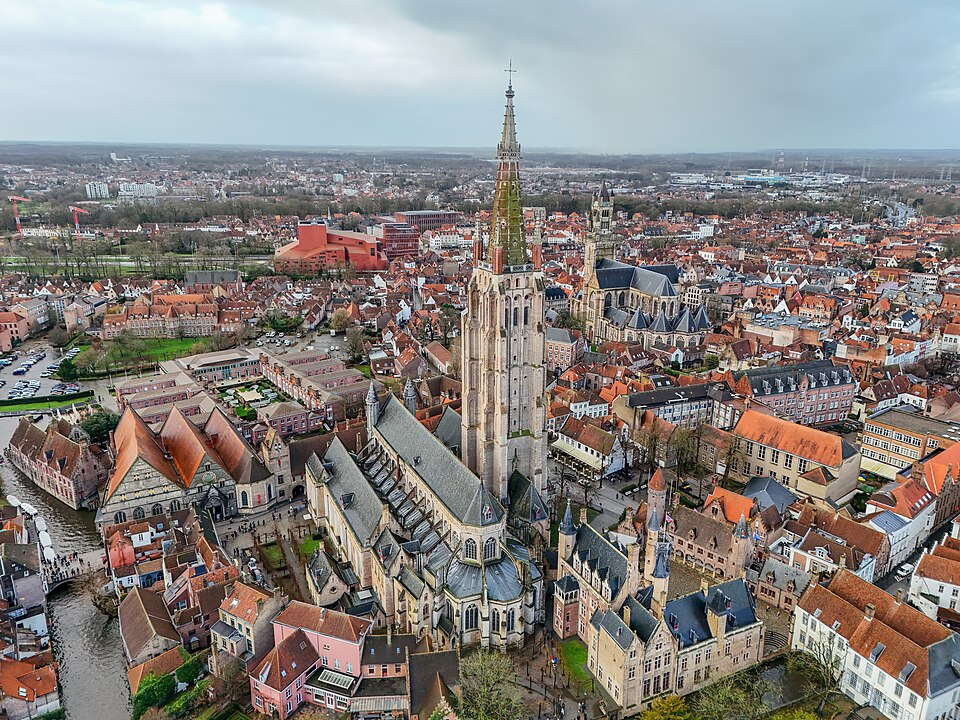
tap to expandStop 09 · Bricks, Michelangelo & a Stolen Masterpiece
At 122 metres, this is the tallest building in Bruges and the tallest brick spire in the Low Countries. Every brick was laid by hand, one at a time. Construction began in 1230 and took over 200 years to finish.
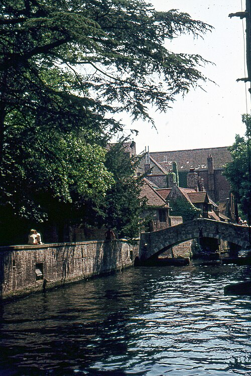
tap to expandStop 10 · Beautiful but Only 100 Years Old
This bridge looks perfectly ancient and is endlessly photographed by visitors who call it the "Bridge of Love." The walking guide's honest admission: it is only about 100 years old — "a little fake," as they put it. But the canal view here is genuinely one of the most beautiful in the city.
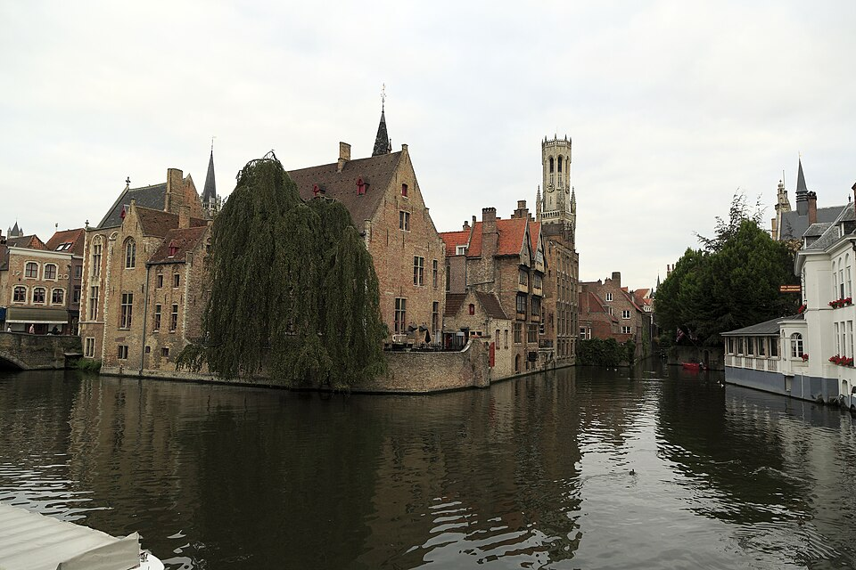
tap to expandStop 11 · Most Photographed View in Bruges
The Belfry tower reflected in a quiet canal lined with ancient gabled houses — this is the most photographed view in all of Bruges. The name Rozenhoedkaai means "Rosary Quay," because this canal-side spot was once where vendors sold rosary beads to pilgrims visiting the Holy Blood relic. But come back at night for the true magic.
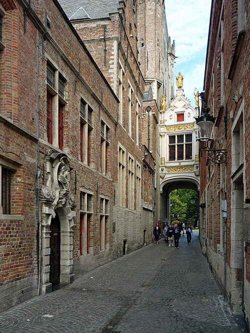
tap to expandStop 12 · Fish, Donkeys & Hidden Details
The North Sea is just 10 miles away. Until a generation ago the Vismarkt (Fish Market) was a thriving daily market with 17th-century Tuscan-pillared arcades. Locals particularly loved the shrimp, which were cooked on the fishing boat before it even arrived at the dock. Today one stall still sells fish; the rest sell crafts and souvenirs.
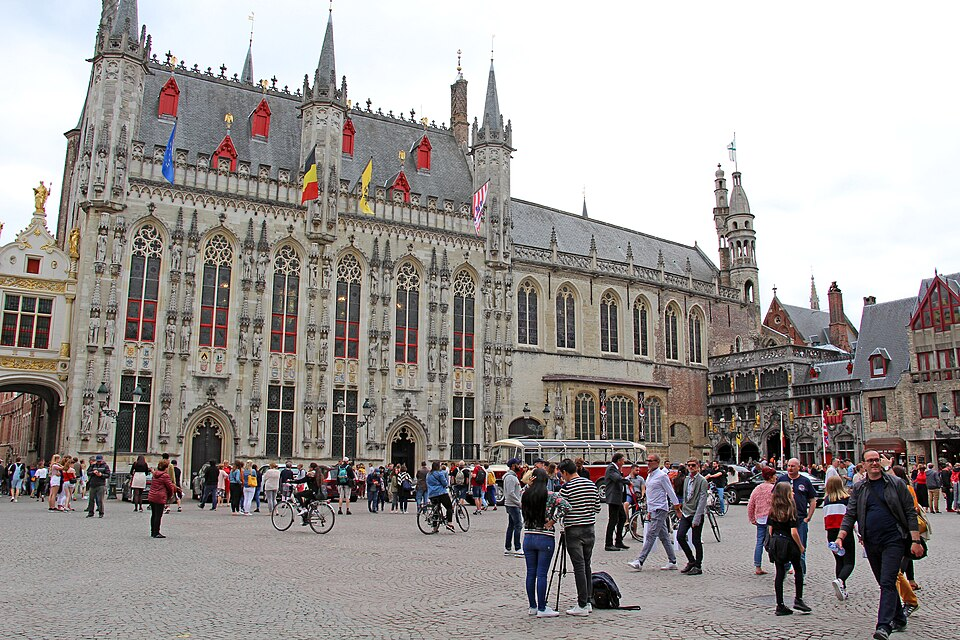
tap to expandStop 13 · The Political Heart of Bruges
The Burg Square has been Bruges' historical birthplace, political center, and religious heart for over a thousand years. Citizens still hold festivals and parades here today. Standing in this one square, you can see five major European architectural styles — spanning 600 years of history.
From Viking Swamp to Sleeping Beauty
Rise, fall, and revival
800s · Founded as a Fortress
Baldwin I builds a fort in the marshy lowlands as a safe haven from Viking raiders. The Vikings had already been calling the settlement "Bryggija" — their word for boat stop — sailing their ships right into what is now the Market Square. That name gradually became Brugge, then Bruges.
1100s · Piety and Pilgrimage
The Holy Blood relic arrives from Jerusalem, brought by Crusader Thierry of Alsace. Bruges becomes a major pilgrimage destination across Northern Europe. St. John's Hospital is founded — one of the oldest hospitals in Europe.
1200s · Trading with the World
Bruges connects by sea to trading partners as far away as England and the Mediterranean. A canal runs directly into the Market Square. Flemish weavers spin imported wool into the finest cloth in Europe, then export it worldwide. Bruges becomes the commercial capital of Western Europe.
1245 · The Women's City
Johanna of Constantinople founds the Begijnhof — a walled, self-governing community for single women and widows, with its own church, brewery, bakery, and farm. The laws of Bruges stop at a stone marker on the bridge. Inside the gate: "Sauve Garde."
1302 · Independence from France
The "Schild en Vriend" password massacre kills 200 French occupiers. France retaliates with 8,000 soldiers. On 11 July, at the Battle of the Golden Spurs, Flemish foot soldiers lure the French cavalry into a swamp. Knights in iron armour sink and cannot rise. Five hundred golden spurs are collected from the dead the next morning. 11 July is still Flanders' national holiday.
1300s–1400s · The Golden Age
Bruges reaches a population of up to 150,000. The Dukes of Burgundy make it their home. The Order of the Golden Fleece is founded here. Jan van Eyck, one of the greatest painters in European history, lives and works in Bruges. Michelangelo's Madonna and Child arrives. The City Hall is completed.
1477–1482 · The Beginning of the End
Charles the Bold dies in battle in 1477. His daughter Mary of Burgundy falls from her horse and dies aged 25 in 1482, handing Bruges to the Habsburg Empire. Rulers who have no interest in Bruges allow the harbour to silt up. Trade routes shift permanently to Antwerp and Amsterdam.
1500s–1800s · Decline and Sleep
Two centuries of slow decline. Bruges becomes a poor, neglected backwater, left behind by the Industrial Age. But its very neglect turns out to be its salvation — without money to modernise, the medieval streets, buildings, and canals simply remain. Bruges sleeps, perfectly preserved.
1900s · The Sleeping Beauty Wakes
The first wave of modern tourists were Americans and Canadians who came after World War I to visit the graves of loved ones in nearby cemeteries — and discovered a perfectly preserved medieval city in the process. Citizens began to restore and revive Bruges. Today it is one of the most visited medieval cities in the world.
The Artists, Knights & Visionaries
One of the greatest painters in European history, Jan van Eyck lived and worked in Bruges under the direct patronage of Philip the Good, Duke of Burgundy. He is widely credited with perfecting the technique of oil painting, which allowed artists to achieve levels of detail and luminosity that had never before been possible. His paintings, including the altarpieces that established Flemish painting as Europe's leading art form, can be seen today at the Groeninge Museum — just minutes from the Market Square.
A butcher and a 60-year-old weaver — not the heroes history usually celebrates. Yet these two ordinary citizens organised the uprising that changed Flemish history forever. Their statue stands at the center of the Market Square, swords raised and facing toward France. Jan Breydel was the butcher; Pieter de Coninck was the weaver. Together they led the citizens of Bruges against their French occupiers in 1302, triggering the chain of events that led to the Battle of the Golden Spurs and Flemish independence.
Lord of the Gruuthuse Palace, knight of the Order of the Golden Fleece, and trusted advisor to the Duke of Burgundy. Louis of Gruuthuse owned 190 hand-illustrated manuscripts — more than twice the size of the English Royal library at the time. Each manuscript cost the equivalent of hundreds of years of a craftsman's wages. He also sheltered the exiled English King Edward IV at the Gruuthuse Palace — an act of diplomacy and hospitality that helped restore Edward to the English throne and changed the course of English history.
The last Duchess of Burgundy and one of the most powerful women in 15th-century Europe. When her father Charles the Bold died in battle in 1477, Mary — aged just 19 — alone inherited the vast territories of Burgundy and Flanders. She married Maximilian of Habsburg to gain military protection, inadvertently handing Bruges to the Austrian Empire. She died aged 25 after falling from her horse, leaving behind a toddler son. Her tomb is inside the Church of Our Lady and is one of the finest examples of medieval funerary art in Belgium.
Born in Montpellier to a wealthy family, Rochus gave away his entire inheritance and devoted his life to caring for victims of the Black Plague across Europe. When he caught the plague himself, he retreated into the woods alone to avoid infecting others, where a stray dog visited him daily with bread. He survived, returned home, was arrested and imprisoned, and died in his cell — still tending to the sick around him. His relics were brought to Venice in 1485, and he has been venerated ever since as the patron saint of the sick and imprisoned.
Count of Flanders and one of the defining figures in Bruges' history. After fighting in the Second Crusade, Thierry returned from Jerusalem in 1150 carrying a vial said to contain drops of Christ's blood, given to him by the patriarch of Jerusalem as thanks for his military service. He donated the relic to Bruges, instantly transforming the city into one of the most important pilgrimage destinations in Northern Europe. The annual Procession of the Holy Blood that he established has been held every year since — for over 870 years without interruption.
Not one person but a centuries-long lineage of musicians who have played the 47-bell carillon in the Belfry tower. Every 15 minutes the bells chime automatically through a giant mechanical barrel — like a player piano built into the sky. For concerts, a live carillonneur sits at a keyboard and plays with fists and feet, since the force required to ring the bells is far too great for fingers alone. Free concerts are played in the inner courtyard of the Belfry on a schedule posted at the entrance gate. The tradition of live carillon performance in Bruges has continued without interruption since the medieval era.